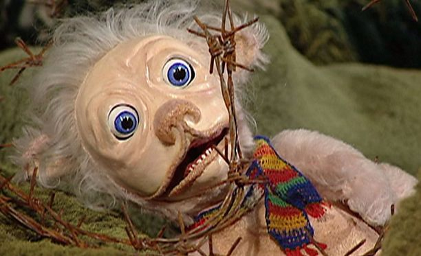

Morso tunnetaan lasten nukkeanimaatio tv-ohjelmasta Aasi, Morso ja Mouru. Ohjelma nähtiin vuosina 1999-2001 Pikku Kakkosella. Sitä pidetään yhtenä kaikkien aikojen pelottavimpana lastenohjelmahahmona. Monet ovat kyselleet että mikä Morso mahtaa olla. Tähän on monenlaisia arvauksia, mutta kunnon vastausta ei ole saatu. Aasi, Morso ja Mouru oli alunperin lastenkirja, jossa Morso oli pieni hiiri. Mutta tässä televisio-ohjelmassa se on eläinlaji, nimeltään morso. Sarja käsittelee erilaisuuden hyväksymistä ja ennakkoluulojen voittamista ja siinä on hyvä käsikirjoitus, joka jää Morson varjoon.

Jakso Aasi, Morso ja Mouru sarjasta